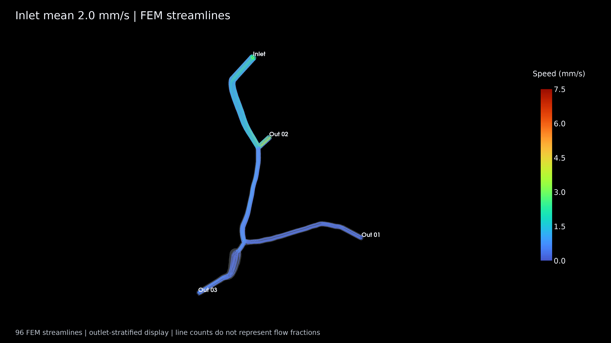
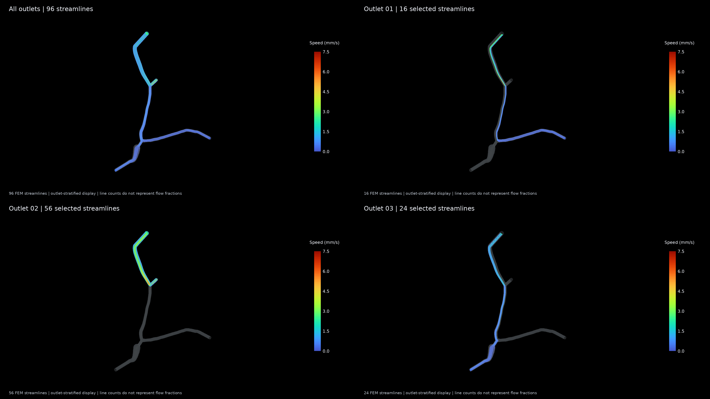
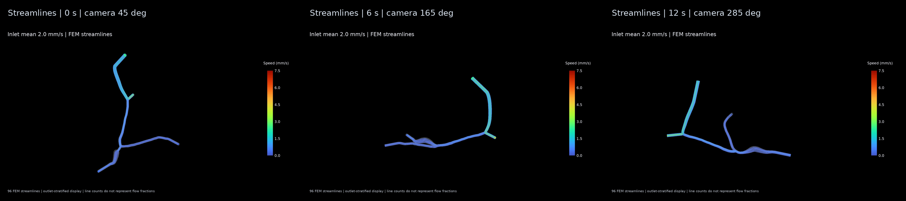
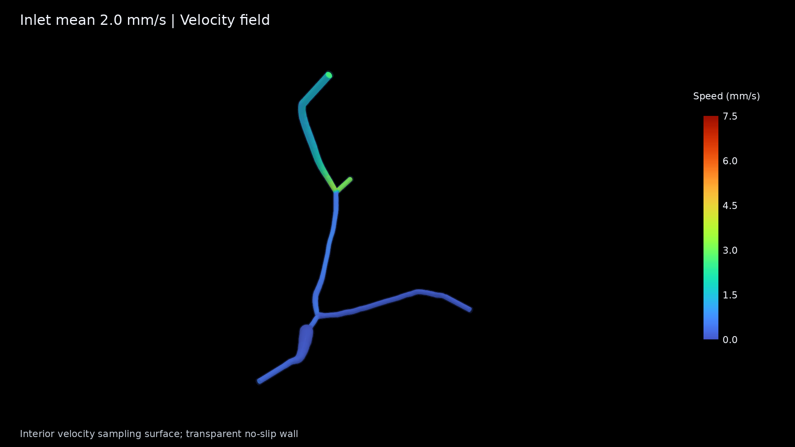
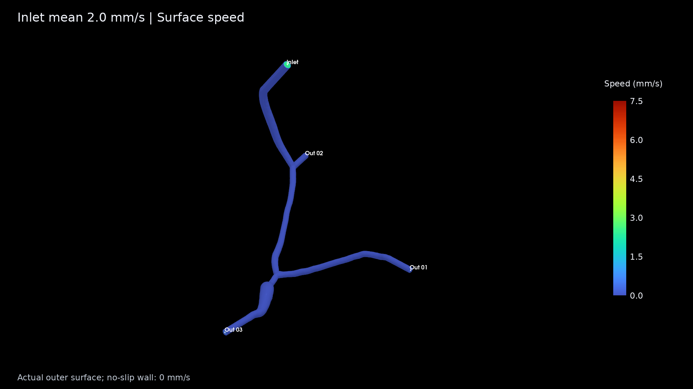
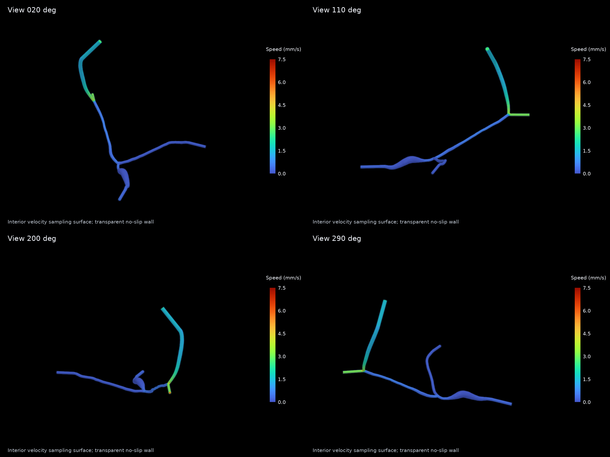
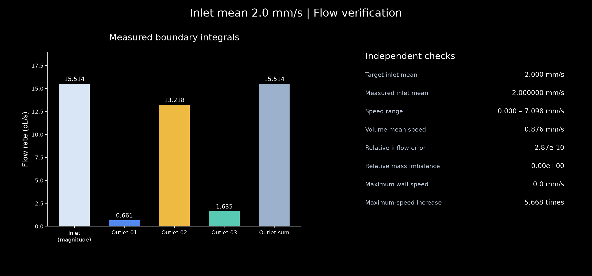
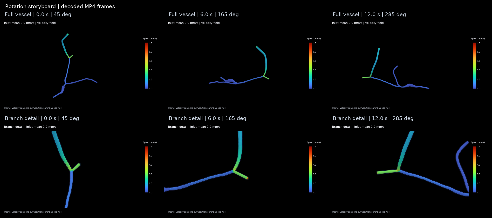
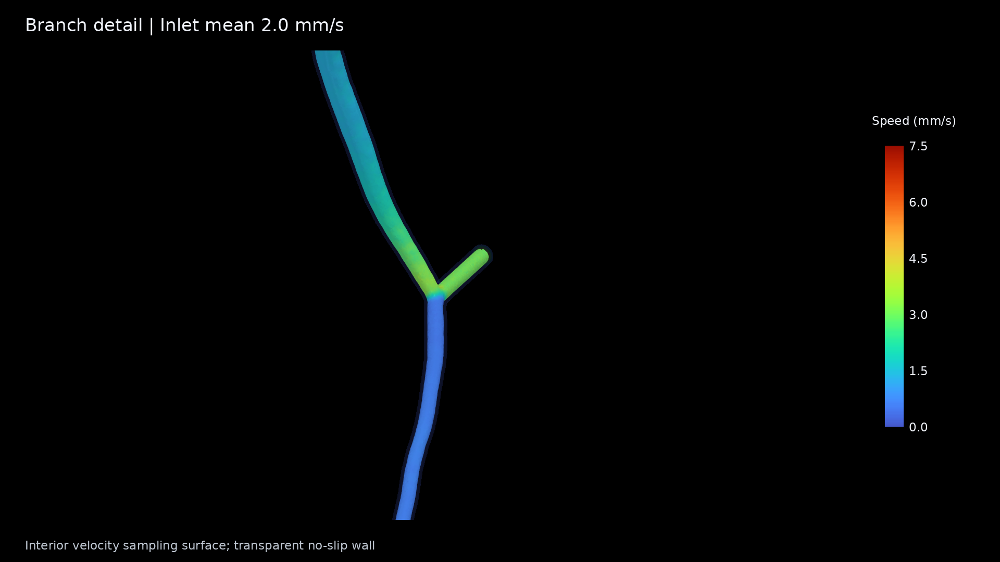

独立重算通过验证。最大速度 7.0979 mm/s；入口相对误差 2.87e-10；守恒误差 0.00e+00。
动画展示冻结稳态场的相机环绕。彩色内部采样曲面显示管腔内速度；真实无滑移壁面的速度为零。
新流场入口均速 2.0 mm/s。96 条实际积分流线覆盖全部出口：出口 01 / 02 / 03 分别显示 16 / 56 / 24 条。为清楚展示小流量分支，流线按出口分层选取，条数不代表分流比例。
下载流线 PPT（3 页，内嵌视频） · 流线说明 · 验证记录



Figure_00_overview.png

Figure_01_surface_speed.png

Figure_02_multiview.png

Figure_03_flow_validation.png

Figure_04_storyboard.png

Figure_05_branch_detail.png
